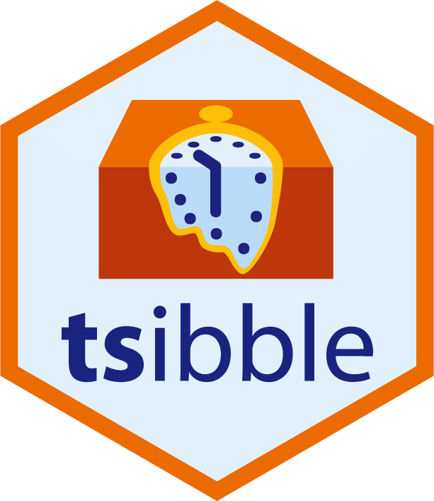
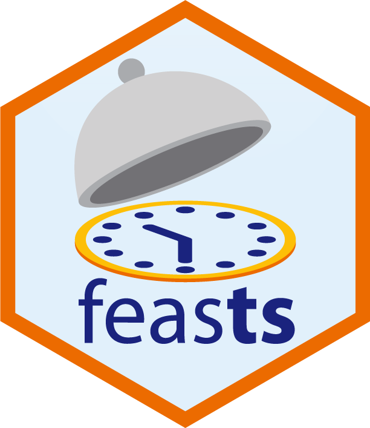
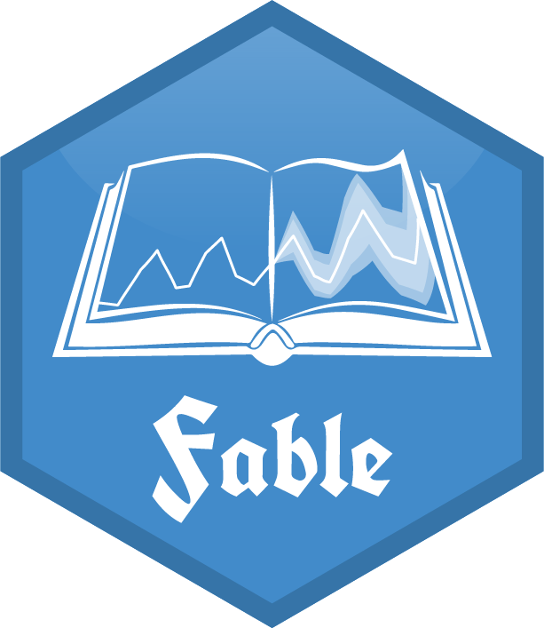

AFRICAST
AFRICASTTidy time series & forecasting in R
Introduction



Workshop goals
By the end of the workshop you will be able to:
- wrangle and visualise time series data in R
- produce forecasts with statistical models and time series foundation models
- evaluate forecast accuracy and choose between models
Project lead and Instructors
Bahman Rostami-Tabar
Professor of Data Driven Decision Making and Director of the Data Lab for Social Good, Cardiff Business School. Founder of the Forecasting for Social Good (F4SG) community and leader of the AFRICAST project.
bahmanrt.com
github.com/bahmanrostamitabar
Rostami-TabarB@cardiff.ac.uk
Mitchell O’Hara-Wild
Time series researcher and R package developer from Monash University (Australia).
Developer of the time series packages (fable, tsibble, ggtime, …) used throughout this workshop.
mitchelloharawild.com
github.com/mitchelloharawild
Mitch.OHara-Wild@monash.edu
Instructors
Abiodun Egwuenu
Instructor and workshop facilitator. Medical doctor and field epidemiologist. PhD candidate at Charité – Universitätsmedizin Berlin modelling antimicrobial resistance (AMR). Led Nigeria’s 2022/23 mpox response.

Harsha Halgamuwe Hewage
Researcher, Data Lab for Social Good, Cardiff Business School. Forecasting and decision support for public health supply chains; researches time series foundation models.

Mustafa Aslan
PhD researcher, Data Lab for Social Good, Cardiff University. Probabilistic forecasting and optimisation for hospital patient flow. Developer of the peshbeen forecasting package.
Organisers
Coordinator
- Henry Kissinger Ochieng
Planning team
- Mkajuma Charity
- Kennedy Mung’are
- José Thiéry Hagbe
Mentors
- Samson Oluwafemi
- Oluchukwu Aghadi
- Lumumba Victor
- Adamu SAIDU Saleh
- Akoeugnigan Idelphonse SODE
- AKOUNDA Badjibassa
- Caroline Mugo
- Winnie Chacha
- Matabel Odin
Assumptions
- Not an R introduction: assumes comfort with R, an IDE (RStudio or Positron) and the tidyverse.
- Not a statistics course: assumes familiarity with means, standard deviations, quantiles, regression, the normal distribution, likelihood, etc.
- Not a theory course: no derivations, just tools for time series and forecasting, when to use them and how to use them well.
Approximate outline
| Session | Topic | Chapter |
|---|---|---|
| 1 | Basics of time series and data structures | 2 |
| 1 | Time series patterns and basic graphics | 2 |
| 2 | Computing and visualising features | 4 |
| 2 | Transformations and decompositions | 3 |
| 2 | Basic modelling / forecasting | 1,5 |
| 3 | Forecasting with regression | 7,10 |
| 3 | ARIMA models | 9 |
| 4 | Exponential smoothing | 8 |
| 4 | Basic training and test accuracy | 5 |
| 5 | Cross-validation and residual diagnostics | 5 |
| 5 | Time series foundation models | – |
Logistics
Each session (UTC+3)
- Lecture 1: 10:00–11:30
- Break: 11:30–11:45
- Lecture 2: 11:45–13:15
- Exercises: 14:00–17:00 (on your own)
- Mentorship: 17:00–18:00
Materials and support
- Workshop website
- Mentorship sessions and Q&A
- Google Classroom
Install required packages
Install before session 1:
Check it works:
References
Hyndman, R. J. & Athanasopoulos, G. (2021) Forecasting: principles and practice, 3rd ed.
- Free and online
- Data sets in associated R package
- R code for examples
Kolassa, S., Rostami-Tabar, B. & Siemsen, E. (2023) Demand forecasting for executives and professionals, 1st ed.
- Free and online
- Not an in-depth technical book
- Mindset behind forecasting
- Overview of forecasting methods and processes
Community
International Institute of Forecasters (IIF)
- Certificate provided by IIF: attend all lectures and exercise sessions to receive it.
- Nonprofit founded in 1982, dedicated to developing and furthering the generation, distribution and use of knowledge on forecasting.
Forecasting for Social Good (F4SG) committee
- Website: f4sg.org
- Follow us on LinkedIn
- Use #AFRICAST, #F4SG if you post on social media about the workshop
Poll: How proficient are you in using R?
- Guru: The R core team come to me for advice.
- Expert: I have written several packages on CRAN.
- Skilled: I use it regularly and it is an important part of my job.
- Comfortable: I use it often and am comfortable with the tool.
- User: I use it sometimes, but I am often searching around for the right function.
- Learner: I have used it a few times.
- Beginner: I’ve managed to download and install it.
- Unknown: Why are you speaking like a pirate?
Poll: How experienced are you in forecasting?
- Guru: I wrote the book, done it for decades, now I do the conference circuit.
- Expert: It has been my full time job for more than a decade.
- Skilled: I have been doing it for years.
- Comfortable: I understand it and have done it.
- Learner: I am still learning.
- Beginner: I have heard of it and would like to learn more.
- Unknown: What is forecasting? Is that what the weather people do?